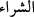
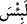
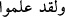
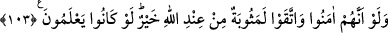
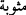
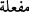
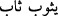
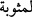
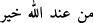

taraf da bulunmuş olsun.
Bu âyette, gâilelerinden emin olunmayan, insanı sapıklığa götürmesi muhtemel
birtakım felsefî ilimlerden kaçınmanın hayırlı olduğuna işâret vardır. Her ne kadar
böyleleri biz sihri yapmak için değil, korunmak için öğreniyoruz; şerri bilmeyen
insanlar ona kolayca düşer, diyorsa da bu, böyledir.
et-Tecnîs adlı eserde şöyle geçer: İlm-i nücûmun öğrenilmesi, kıble tâyîni ve güneşin
doğup batması gibi husûslar hâricinde haramdır. el-Mesâbîh’de geçen bir hadîsde:
“Kim ilm-i nücûmdan bir şey öğrense, sihirden bir bölüm öğrenmiş gibi
olur”[340]buyurulmuştur. Kişinin bu tür ilimleri öğrenmemesi daha hayırlıdır. Aynı
şekilde bu tür ilimleri kapsayan sapık felsefî kitapları elde bulundurmamak gerekir.
Hatta Nisâbü’l-ihtisâb’da da belirtildiği gibi, onlarla ilgili münâzara bile câiz değildir.
Andolsun ki o yahûdîler onu satın alan kimsenin; yâni sihri tercih edip Allah’ın
âyetleri yerine, şeytanların okuduklarını koyanların âhirette nasîblerinin olmayacağını
Tevrât’tan öğrenmişlerdi.
Karşılığında nefislerini sattıkları şeyin ne kötü olduğunu keşke bilselerdi. (
)
“şirâ” kelimesi hem satmak, hem satın almak mânâsındadır. Burada satmak
mânâsınadır. (
) deki “Lâm” mahzûf bir yemînin cevâbıdır. Esas yerilen şey
gizlidir. O da sihir ve küfürdür. “Îmânları” yerine “nefisleri” dendi. Çünkü nefis, ilim
amel ve îmân için yaratılmıştır. Şartın cevâbı mahzûftur. “Yâni bilselerdi, sihir öğrenme
ve onu uygulama yönünde yapmış oldukları şeyi yapmazlardı” demektir. Önce onlar için
“biliyorlardı, öğrenmişlerdi” sözü ile “bilme” tabiri (
) ile sâbit kılındı, sonra
bu nefyedildi. Çünkü bildikleriyle amel etmediklerinden sanki onu bilmemiş gibi
oldular. Aslında bu ilmin nefyedilmesi değil, ilimle faydalanmanın nefyedilmesidir.
103. Eğer îmân edip kendilerini kötülükten korusalardı, şüphesiz, Allah
tarafından verilecek sevâb daha hayırlı olacaktı. Keşke bunları anlasalardı!
Eğer o yahûdîler, Kur’ân’a ve peygambere îmân edip sihir ve şirkten sakınsalardı
Allah katından olan sevâb daha hayırlı olurdu. (
) kelimesi (
) masdarından (
) kalıbındadır. (
) “döndü” mânâsına gelir. Allah Teâlâ’nın mükâfâtının
“Mesûbe” olarak nitelendirilmesi, sâlih kulun amelinin karşılığı olmasındandır. Çünkü
bu mükâfât, iyiliğe karşılık kula döner gelir. (
) mübtedâdır ve ( ) ’in cevâbıdır.
Bu kelimenin nekre olması azlığı ifâde etmek içindir. “Az bir sevâb” demektir. (
) bölümü haberdir. Mânâ topluca: “Allah katında olan az bir sevâbla
mükâfâtlandırılmaları bile, karşılığında nefislerini sattıkları şeyden daha
hayırlıdır” şeklindedir.